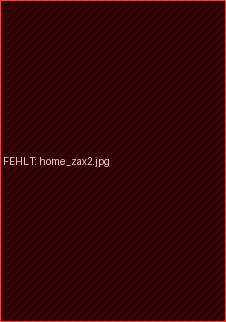

 |
 |
|
|
| |
VOR DIR
LIEGT DAS ABENTEUER DEINES LEBENS…
"Zax-The Alien Hunter" ist
ein futuristischer Abenteurer, unterwegs auf einsamer Mission
zur Anhäufung von Reichtümern, als eine Bruchlandung
ihn auf einen einsamen Planeten verschlägt, der bisher
auf keiner Karte verzeichnet war. Da die Systeme seines Schiffes
durch den Aufprall heftig in Mitleidenschaft gezogen worden
sind, bleibt Zax nichts anderes übrig, als sich durch diese
trostlos vor sich hin dümpelnde Welt zu manövrieren,
bis er die notwendigen Ressourcen aufgetrieben hat, um sein
Schiff zu reparieren und lebend davonzukommen.
Ohne jegliches militärische Training hat er nichts als
seinen Scharfsinn und die Intelligenz seines Schiffes Zelon,
die ihm als zweites Augen- und Ohrenpaar dient und ihn mit allem
Überlebensnotwendigen versorgen muss.
Schon bald entdeckt er, dass dies ein Ort uralter Religionen
und wundersamer Magie ist, und dass er nur einen einzigen möglichen
Verbündeten hat - eine unterdrückte Rasse, die selbst
verzweifelt nach Hilfe sucht. Dieses Volk, das unter dem Namen
Korbo bekannt ist, lebt wie eine primitive Agrargesellschaft
und betet einen zornigen Gott an.
Einen machtvollen und schrecklichen Gott, der unter ihnen weilt.
Einen Gott, der von Zax' Anwesenheit alles andere als erfreut
ist.
|
|
 |
|
 |
|
|